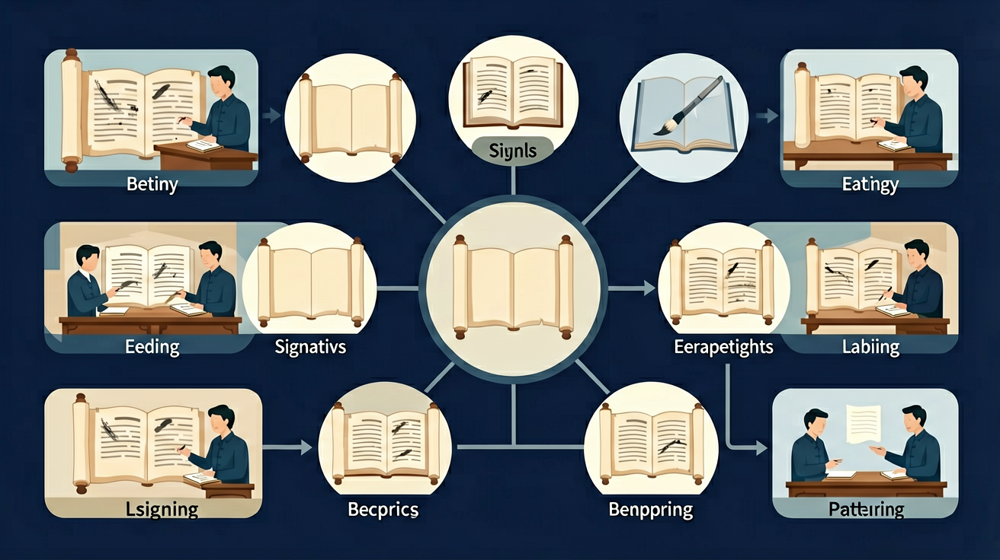

真实情境
社区读书会上的《孔乙己》讨论
社区读书会上，成员们对鲁迅《孔乙己》中'排出九文大钱'的描写产生分歧。有人认为这是炫耀，有人认为是窘迫，还有人觉得体现迂腐性格。主持人要求大家从文中找出三处细节支持各自观点。
已有经验
学生已掌握人物描写基本方法（动作/语言/神态）
真正卡点
混淆细节描写与主观臆断，难以区分文本证据与个人联想
本课任务
通过文本细节分析'排出'动作的表达效果
怎样用文本证据解释文学类作品鉴赏中的表达效果与思想情感？

先选一个你关心的问题。后面的例子、提示和 AI 学伴都会围绕这个问题来帮你推进。
选择或输入后，本课会围绕你的问题展开。
鉴赏文学作品时，所谓「表达效果」指的是？
社区读书会上，成员们对鲁迅《孔乙己》中'排出九文大钱'的描写产生分歧。有人认为这是炫耀，有人认为是窘迫，还有人觉得体现迂腐性格。主持人要求大家从文中找出三处细节支持各自观点。
学生已掌握人物描写基本方法（动作/语言/神态）
混淆细节描写与主观臆断，难以区分文本证据与个人联想
通过文本细节分析'排出'动作的表达效果
欣赏文学作品要品味形象、语言和情感。通过分析人物形象、意象意境体会作品的艺术魅力，关注语言的准确、生动与含蓄，理解作者借形象所寄托的思想感情，形成自己的审美体验和评价。
赏析语句可从修辞、用词、句式、描写角度切入，先说手法，再说它写出了什么、表达了什么情感、有什么效果。评价作品要有自己的感受，并能用文本细节加以印证，做到言之有据。
常见误区：常见误区是赏析只会说“写得好、很生动”，却讲不出好在哪里。赏析语句要先指出修辞、用词或描写角度等手法，再分析它写出了什么、表达了什么情感、有什么效果，并用文本细节印证自己的审美判断。
赏析精彩语句，恰当的思路是？
记忆锚点：文学鉴赏要把语言、形象和主题连起来。
请选择一段课外文本或自己的作文片段，设计一道与本课相关的问题。你需要写出标准答案，并标明每一分对应的证据、方法、效果和表达。
理解文学作品通过形象与语言表达情感的创作规律，掌握从文本细节分析艺术表现力的基本方法
鲁迅《孔乙己》中'排出九文大钱'的'排'字，通过动作细节展现人物迂腐又维护尊严的复杂心理
定位关键语句→分析修辞手法→联系人物形象→体会情感表达效果
脱离文本空谈感受，如将'排'简单理解为'付钱'而忽略动作背后的性格特征
课堂任务：请用“现象/文本/地图/实验数据 → 关键证据 → 学科解释 → 迁移应用”四步，重写一个关于「文学类作品鉴赏：从文本证据到表达效果」的新问题。
改写材料或切换分析维度，观察答题链如何变化。
输入一段文本，生成“证据—方法—效果”的批注图；也可以上传作文截图，按立意、材料、结构和语言进行诊断。
一个文学类作品鉴赏答案想拿高分，最关键的是？
写出本课答题路径，并标出每一步需要的文本证据。
用本课方法分析一段新文本，至少引用两处原文。
修改一个空泛答案，让它变成有证据、有方法、有表达效果的高分答案。
如果你能解释“怎样用文本证据解释文学类作品鉴赏中的表达效果与思想情感？”，这节课就真正过关了。